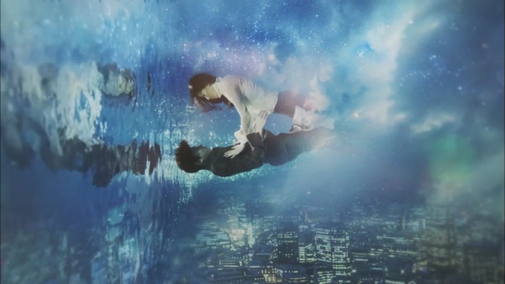

Review: The Legend of the Blue Sea
Give me mermaids and I'm a happy girl. I love mermaids so I couldn't resist watching this drama. Throw in some romance, a bit of action and suspense and you've got what sounds like a drama tailor-made for me to love.
While I did really enjoy this drama, it left me wanting a little more in the romance area. Btw I feel like I'm a bit of a tough critic when it comes to rating shows. Even my most loved show so far only has a 9/10. I guess a 10/10 show would be one I would actually rewatch. I haven't had the urge yet. With that said, I'd give The Legend of the Blue Sea an 8/10. But that is still a very good rating in my book.
What I loved about the show, first and foremost, is the lead actress, Jun Ji Hyun who plays Shim Cheong. She doesn't fall into the usual tropes in romances of the weak woman who's always following after the man hanging onto his every word. That annoys me to no end so I love that her character is a strong female lead, literally and figuratively, and that she's freaking hilarious. I don't know if I've ever laughed so loud from a drama before. I can't even give an example of one of the many moments because I don't wanna spoil anything so just take my word for it. She shines in this role and I'll be sure to check out her other dramas. Add to that the handsome male lead, Lee Min Ho, and you've got a dynamic pair. I only previously saw him in Boys Over Flowers and I wasn't a big fan of that show due to the aforementioned trope so he wasn't on my list of actors to watch. But he definitely is now.
This show has such an interesting storyline. The connection to the past between the characters is slowly unveiled and it makes for intrigue and mystery.